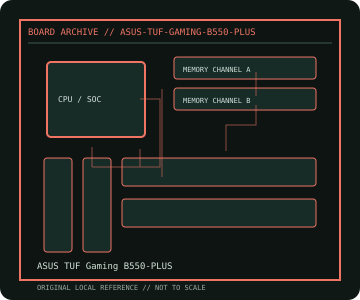

[ INDIVIDUAL COMPONENT // MOTHERBOARDS ]
ASUS TUF Gaming B550-PLUS
AMD B550 AM4 ATX platform, 2020. This record documents the named model and its documented variants; confirm the PCB revision, submodel and firmware on the physical unit.

REVISION WARNING: Similar model names and PCB revisions may have different processors, connectors or firmware. Read the silkscreen and assembly code; use the support files for that exact board variant.
Specifications
| Catalog subcategory | Modern AMD platforms |
|---|---|
| Exact model / era | ASUS TUF Gaming B550-PLUS — AMD B550 AM4 ATX platform, 2020 |
| CPU and socket / SoC | AM4 Ryzen 3000/4000G/5000 and selected Athlon CPUs per ASUS CPU list and BIOS |
| Chipset / platform | AMD B550 |
| Memory | Four DDR4 DIMM sockets, dual-channel, maximum 128 GB listed; speed and ECC behavior depend on CPU and DIMM validation |
| Slots and connectivity | ATX; two PCIe x16-length slots, three PCIe x1; two M.2 sockets, six SATA 6 Gb/s, USB 3.2 Gen 2, 2.5GbE and onboard audio |
| Firmware | ASUS UEFI BIOS; use B550-PLUS support files and check minimum BIOS for the specific CPU. |
Compatibility and revision notes
Primary PCIe 4.0/M.2 path requires supported Ryzen CPU; APU and secondary slot behavior differ. Standard B550-PLUS is not interchangeable with Wi-Fi, II or microATX variants.
Socket, connector shape and family branding alone do not establish compatibility. Verify the exact processor list, minimum BIOS, memory population table, power input, dimensions, and shared-lane behavior in the cited manual before installation.
Preservation and repair
Inspect AM4 CPU pins, M.2 thermal pad fit and VRM heatsink mounting. Check the manual's lane-sharing chart, memory slot order and BIOS version; avoid powering while loose screws are under the PCB.
For archival preservation, photograph the PCB, labels, connectors and included accessories before cleaning. Record serial/date codes, firmware versions, known faults, prior repairs and test conditions; use ESD-safe handling and do not power a board with loose conductive hardware beneath it.
Sources & further reading
- ASUS TUF Gaming B550-PLUS — product/manual referenceModel-specific platform, board layout and interface reference.
- ASUS TUF Gaming B550-PLUS — support and firmware resourcesSupport documentation; match the PCB revision, CPU support list and firmware release to the physical board.
Manufacturer/model documentation is the primary reference. Where vendor support is archived, match its revision notes to the board and do not cross-flash firmware from a similar product.